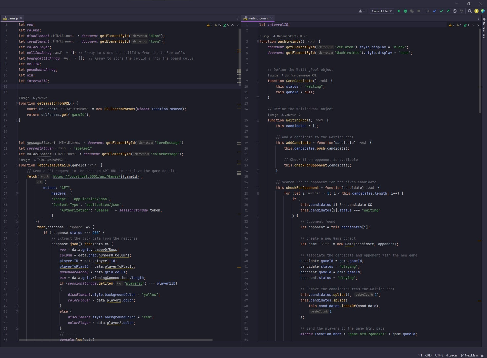
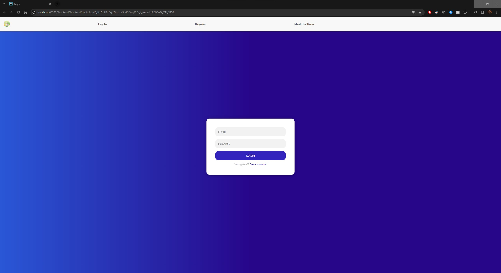
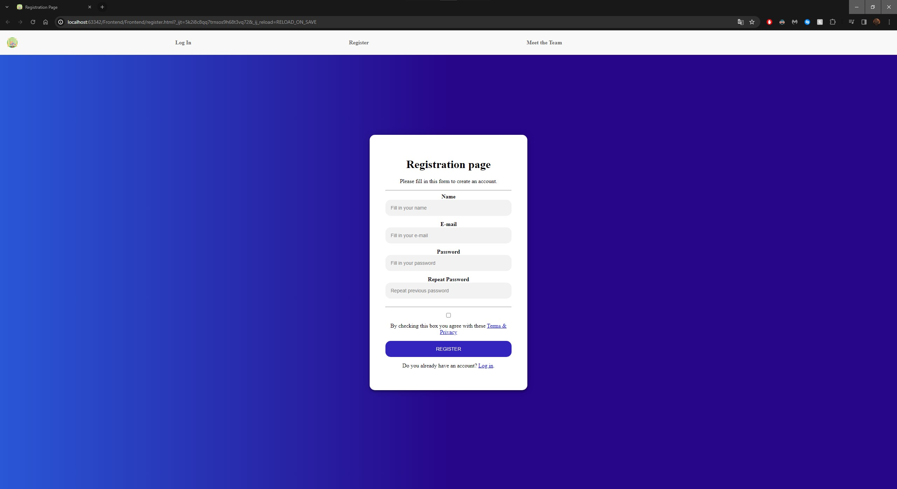
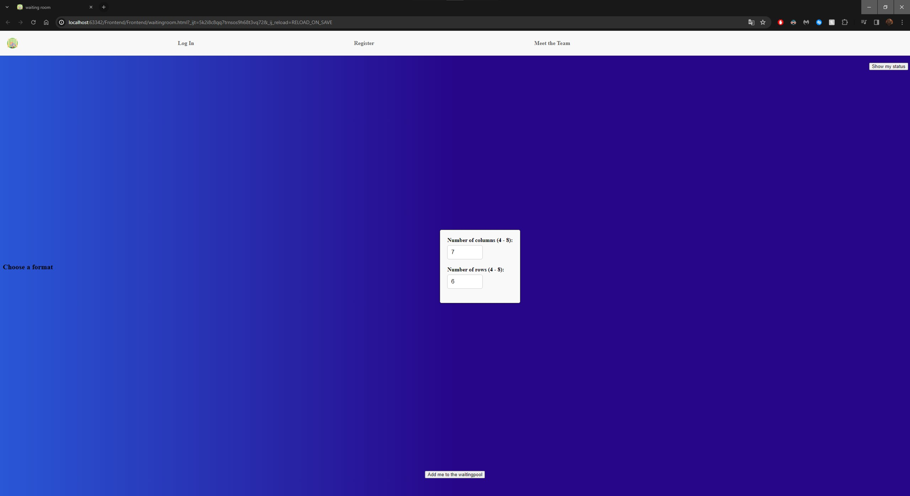
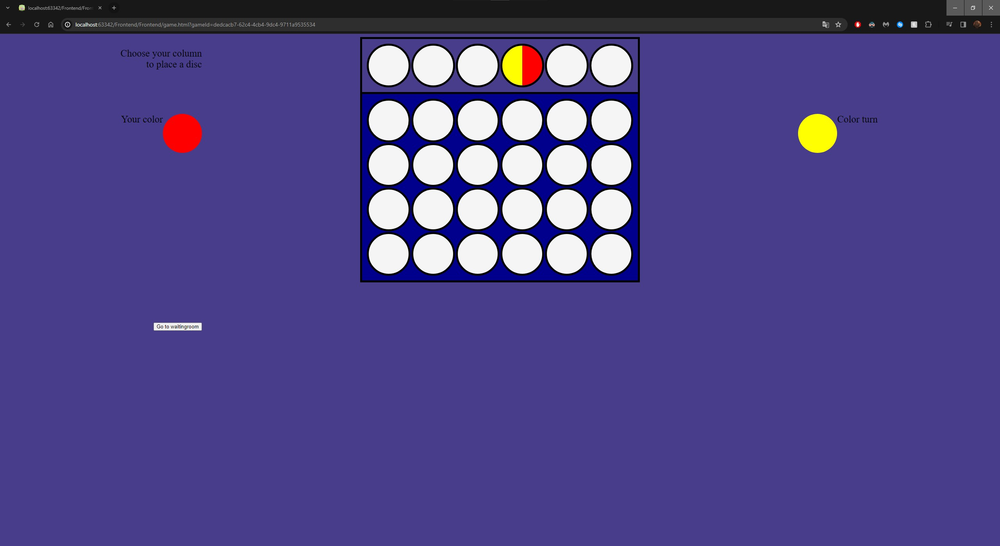
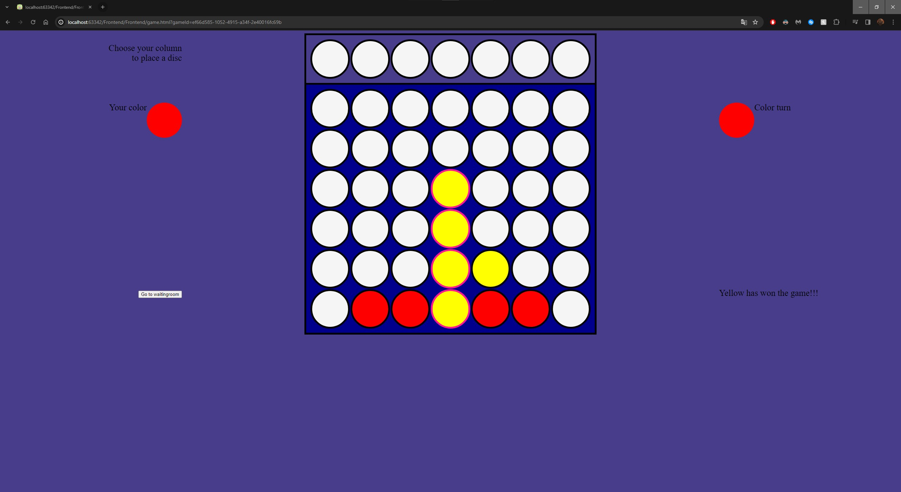

Connect four
In het jaar 2022 - 2023 heb ik samen met nog drie andere studenten een project gemaakt.
In dit project hebben wij met ons vier het spel vier op een rij nagemaakt.
Ik heb me voornamelijk bezig gehouden met het frontend gedeelte van het project.
Dit wilt zeggen dat ik mij bezig hield met het design van de website en met het aanspreken van de backend door behulp van verschillende fetches
Hier een voorbeeld:
Onze game bestond uit een register en login pagina waarom je kon inloggen en registreren.
Deze gegevens werden dan backend opgeslagen in een database.
Uiteraard konden er geen meerdere dezelfde emails zijn.
Hier zijn enkele foto's van de inlog- en registratie-pagina:
 Natuurlijk eens je ingelogd bent kom je in een wachtruimte.
In deze wachtruimte kan je kiezen op wat voor veldgrote je wilt spelen.
Deze veldgroten lopen van 4 op 4 naar 8 op 8.
Eens je dan een veldgrote gekozen hebt kan je klikken op voeg toe aan wachtruimte en dan is het wachten tot een andere persoon ook met dezelfde grote van veld een game zoekt.
Eens je in het spel zit kan je een zet doen. Jouw kleur wordt links weergegeven en de kleur van wie de beurt is rechts. Ook wanneer je hovert over de bovenste rij zie je de 2 kleuren van de schijven.
Natuurlijk moet er ook een winnaar zijn. Eens iemand gewonnen heeft krijg je het volgende scherm te zien:
Aan de hand van de roze border zie je waar er vier op een rij gescoor is en rechtsonder zie je wie er gewonnen heeft. Eens er een winnaar is of wanneer het gelijkspel is kan je geen zetten meer doen en is het spel afgelopen.